Last updated: 2026-10-21
Checks: 7 0
Knit directory: amniosinglecell/
This reproducible R Markdown analysis was created with workflowr (version 1.7.2). The Checks tab describes the reproducibility checks that were applied when the results were created. The Past versions tab lists the development history.
Great! Since the R Markdown file has been committed to the Git repository, you know the exact version of the code that produced these results.
Great job! The global environment was empty. Objects defined in the global environment can affect the analysis in your R Markdown file in unknown ways. For reproduciblity it’s best to always run the code in an empty environment.
The command set.seed(20220125) was run prior to running
the code in the R Markdown file. Setting a seed ensures that any results
that rely on randomness, e.g. subsampling or permutations, are
reproducible.
Great job! Recording the operating system, R version, and package versions is critical for reproducibility.
Nice! There were no cached chunks for this analysis, so you can be confident that you successfully produced the results during this run.
Great job! Using relative paths to the files within your workflowr project makes it easier to run your code on other machines.
Great! You are using Git for version control. Tracking code development and connecting the code version to the results is critical for reproducibility.
The results in this page were generated with repository version 650c8b0. See the Past versions tab to see a history of the changes made to the R Markdown and HTML files.
Note that you need to be careful to ensure that all relevant files for
the analysis have been committed to Git prior to generating the results
(you can use wflow_publish or
wflow_git_commit). workflowr only checks the R Markdown
file, but you know if there are other scripts or data files that it
depends on. Below is the status of the Git repository when the results
were generated:
Ignored files:
Ignored: .DS_Store
Ignored: .Rhistory
Ignored: .Rproj.user/
Ignored: analysis/generate_site.R
Ignored: analysis/knit_docs.R
Ignored: analysis/run_as_job.R
Ignored: analysis/sccomp_draws_files/
Ignored: celltypist/.DS_Store
Ignored: data/
Ignored: excluded_analysis/
Ignored: output/
Ignored: renv/.DS_Store
Ignored: renv/library/
Ignored: renv/staging/
Ignored: sccomp_draws_files/
Untracked files:
Untracked: AmnioSC_Manuscript_Claude/
Untracked: claude_log/
Unstaged changes:
Modified: copy_to_publication_repo.sh
Note that any generated files, e.g. HTML, png, CSS, etc., are not included in this status report because it is ok for generated content to have uncommitted changes.
These are the previous versions of the repository in which changes were
made to the R Markdown
(analysis/AmnioSC_additional_main_figures.Rmd) and HTML
(docs/AmnioSC_additional_main_figures.html) files. If
you’ve configured a remote Git repository (see
?wflow_git_remote), click on the hyperlinks in the table
below to view the files as they were in that past version.
| File | Version | Author | Date | Message |
|---|---|---|---|---|
| html | bac78be | Calandra Grima | 2026-10-13 | Build site. |
| Rmd | 82e2b39 | Calandra Grima | 2026-10-13 | wflow_publish(here("analysis", "AmnioSC_additional_main_figures.Rmd")) |
| html | 827d4a9 | Calandra Grima | 2026-10-02 | Build site. |
| Rmd | d1d3c15 | Calandra Grima | 2026-10-02 | wflow_publish(here("analysis", "AmnioSC_additional_main_figures.Rmd")) |
| html | 3bc6d1a | Calandra Grima | 2026-09-28 | Build site. |
| Rmd | 216da05 | Calandra Grima | 2026-09-28 | wflow_publish(here("analysis", "AmnioSC_additional_main_figures.Rmd")) |
| Rmd | 73a625c | Calandra Grima | 2026-09-28 | rename main figures page |
| html | 73a625c | Calandra Grima | 2026-09-28 | rename main figures page |
library(Seurat)
library(SeuratObject)
library(clustree)
library(scater)
library(stringr)
library(ggplot2)
library(ggbeeswarm)
library(cowplot)
library(patchwork)
library(egg)
library(workflowr)
library(here)
library(sessioninfo)
library(viridis)
library(Polychrome)
library(magick)
library(png)
library(ggplot2)
library(grid)
library(limma)
library(edgeR)
library(ggtext)
library(dplyr)
library(tidyverse)
library(ggplotify)
source(here("code", "helper_functions.R"))
source(here("code", "load_colour_schemes.R"))
source(here("code", "limma_barcodeplot_custom.R"))
# using customised version of the barcodeplot function to make the font size bigger and change shade of background colour
# as cannot pass cex arguments to the original barcodeplot function
# https://support.bioconductor.org/p/119752/
source(here("code", "seurat_dotplot_custom.R"))
# using customised version of DotPlot function to fix the ggplot2 facet_grid() defunct error
# https://github.com/satijalab/seurat/issues/10143
RERUN_ALL <- FALSEThe seu_int.AmnioSC object was generated on this
page.
seu_int.AmnioSC <- readRDS(here("data", "workflow", "AmnioSC_ALL_optimised_ref.Refined_labels.Seurat.rds"))fig1.n_cells_clusters <- plotNCells.Paper(seu_int.AmnioSC, x_var = "cluster_names",
color_by = "cluster_names",
colour_scheme = CLUSTER_NAME_COLOURS,
title = "Number of cells per cluster",
subtitle="",
xlab = "", ylab = "Number of cells", ymax = 6200)
fig1.n_cells_clusters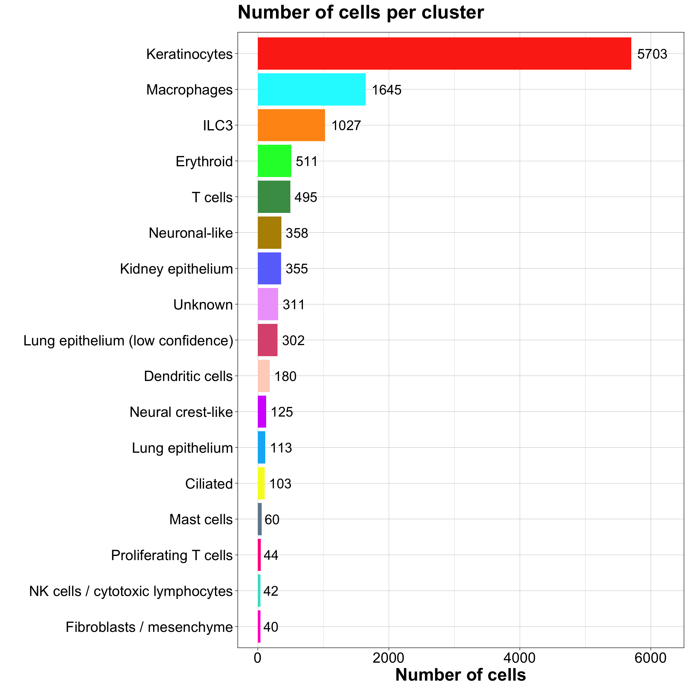
| Version | Author | Date |
|---|---|---|
| 3bc6d1a | Calandra Grima | 2026-09-28 |
saveRDS(fig1.n_cells_clusters, here("output", "main_figures", "fig1.n_cells_clusters.rds"))fig1.umap_clusters <- plotUMAP.Paper(seu_int.AmnioSC, color_by = "cluster_names",
colour_scheme = CLUSTER_NAME_COLOURS,
title = "", subtitle="", label_size = 6) Warning: `aes_string()` was deprecated in ggplot2 3.0.0.
ℹ Please use tidy evaluation idioms with `aes()`.
ℹ See also `vignette("ggplot2-in-packages")` for more information.
ℹ The deprecated feature was likely used in the Seurat package.
Please report the issue at <https://github.com/satijalab/seurat/issues>.
This warning is displayed once per session.
Call `lifecycle::last_lifecycle_warnings()` to see where this warning was
generated.Warning in geom.use(data = labels.loc, mapping = aes_string(x = xynames["x"], :
Ignoring unknown parameters: `fill`fig1.umap_clusters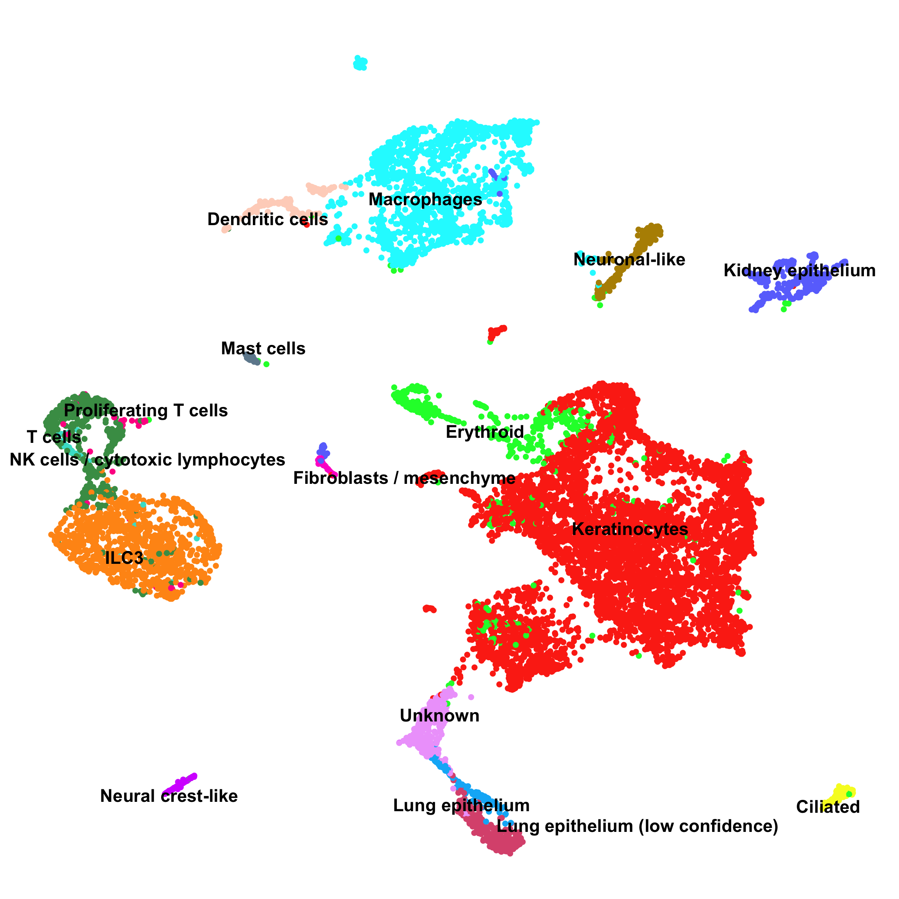
| Version | Author | Date |
|---|---|---|
| 3bc6d1a | Calandra Grima | 2026-09-28 |
saveRDS(fig1.umap_clusters, here("output", "main_figures", "fig1.umap_clusters.rds"))AmnioSC.canonical_markers.reduced <- readRDS(here("data", "workflow", "AmnioSC.canonical_markers.reduced.rds"))
AmnioSC.canonical_markers.reduced <- AmnioSC.canonical_markers.reduced[levels(seu_int.AmnioSC$cluster_names)]
canonical_markers.reduced <- unique(unlist(AmnioSC.canonical_markers.reduced, use.names = FALSE))
canonical_markers.reduced <- filterPresentGenes(canonical_markers.reduced, seu_int.AmnioSC)
seu_int.AmnioSC$cluster_names.rev <- sortedFactor(seu_int.AmnioSC$cluster_names, decreasing = FALSE)
DotPlot.custom(object = seu_int.AmnioSC, features = canonical_markers.reduced, assay = "SCT",
group.by = "cluster_names.rev", col.max = 5) +
geom_point(aes(size=pct.exp), shape = 21, colour="black", stroke=0.5) +
scale_size("% detected", range = c(0,6)) +
scale_color_gradient(low = "gray95", high = "#39157B",
guide = guide_colorbar(ticks.colour = "black",
frame.colour = "black"),
name = "Average\nexpression") +
ggtitle("Selected canonical marker genes") +
theme_linedraw() + rotate_x_labels +
labs(subtitle = "Our Dataset") +
ylab("") + xlab("") +
theme(plot.title = element_markdown(size = 24, face = "bold", family = "arial"),
plot.subtitle = element_markdown(size = 22, face = "italic", family = "arial"),
legend.title = element_text(size = 20, face = "bold.italic", family = "arial"),
legend.text = element_text(size = 18, family = "arial"),
axis.title.y = element_text(size = 22, family = "arial", face = "bold"),
axis.text = element_text(size = 18, family = "arial"),
axis.title.x = element_markdown(family = "arial", size = 22, face = "bold"),
strip.text = element_text(face = "bold", size = 22)) -> fig1.dotplot_clustersScale for size is already present.
Adding another scale for size, which will replace the existing scale.
Scale for colour is already present.
Adding another scale for colour, which will replace the existing scale.fig1.dotplot_clusters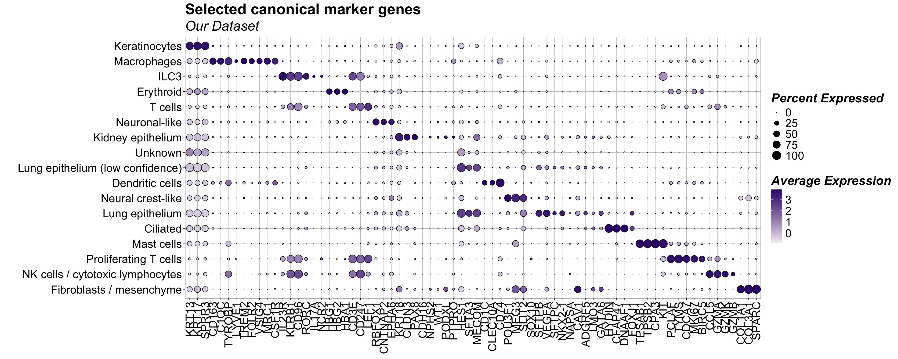
| Version | Author | Date |
|---|---|---|
| 3bc6d1a | Calandra Grima | 2026-09-28 |
saveRDS(fig1.dotplot_clusters, here("output", "main_figures", "fig1.dotplot_clusters.rds"))diagram1 <- image_read(here("output", "main_figures", "AmnioSC_diagram.png"))
fig1.diagram1<- rasterGrob(diagram1, interpolate = TRUE)
diagram2 <- image_read(here("output", "main_figures", "CombinedMeta_Diagram.png"))
fig1.diagram2 <- rasterGrob(diagram2, interpolate = TRUE)
# fig1.n_cells_clusters <- readRDS(here("output", "main_figures",
# "fig1.n_cells_clusters.rds"))
# fig1.umap_clusters <- readRDS(here("output", "main_figures",
# "fig1.umap_clusters.rds"))
# fig1.dotplot_clusters <- readRDS(here("output", "main_figures",
# "fig1.dotplot_clusters.rds"))layout = "
AAAAAAAAAAAAAAAAAAAAAAAAA
AAAAAAAAAAAAAAAAAAAAAAAAA
BBBBBBBBBBBBBBBBBBBBBBBBB
BBBBBBBBBBBBBBBBBBBBBBBBB
CCCCCCCCCCCCCCDDDDDDDDDDD
CCCCCCCCCCCCCCDDDDDDDDDDD
CCCCCCCCCCCCCCDDDDDDDDDDD
CCCCCCCCCCCCCCDDDDDDDDDDD
CCCCCCCCCCCCCCDDDDDDDDDDD
EEEEEEEEEEEEEEEEEEEEEEEEE
EEEEEEEEEEEEEEEEEEEEEEEEE
EEEEEEEEEEEEEEEEEEEEEEEEE
EEEEEEEEEEEEEEEEEEEEEEEEE
"
wrap_elements(full = fig1.diagram1) + wrap_elements(full = fig1.diagram2) +
wrap_elements(fig1.umap_clusters + theme(plot.margin = unit(rep(0,4), "cm"))) +
wrap_elements(fig1.n_cells_clusters + theme(plot.margin = unit(rep(0,4), "cm"))) +
wrap_elements(fig1.dotplot_clusters + theme(plot.margin = unit(rep(0,4), "cm"))) +
plot_layout(design = layout) +
plot_annotation(tag_levels = list(c("A", " ", "B", "C", "D", "E", "F", "G", "H"))) &
theme(
plot.tag = element_text(size = 30, face = "bold", family = "arial"),
axis.title = element_text(size = 20, face = "bold", family = "arial"),
axis.text = element_text(size = 16, family = "arial"),
legend.title = element_text(size = 16, face = "bold", family = "arial"),
legend.text = element_text(size = 16, family = "arial")) -> fig1
fig1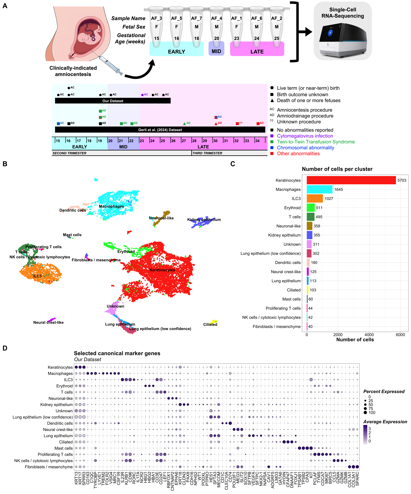
| Version | Author | Date |
|---|---|---|
| 3bc6d1a | Calandra Grima | 2026-09-28 |
ggsave(plot = fig1, filename = here("output", "figures_png", "fig1.png"), height = 30, width = 25)The seu_int.AmnioSC object was generated on this
page.
seu_int.AmnioSC <- readRDS(here("data", "workflow", "AmnioSC_ALL_optimised_ref.Refined_labels.Seurat.rds"))
seu_int.AmnioSC <- seu_int.AmnioSC[, seu_int.AmnioSC$Donor != "5AF"]
CLUSTER_NAME_COLOURS.SELECTED <- c(CLUSTER_NAME_COLOURS[c(7, 10, 12)], "grey")
names(CLUSTER_NAME_COLOURS.SELECTED) <- c("ILC3", "Lung epithelium (low confidence)", "Lung epithelium", "Other Clusters")
seu_int.AmnioSC$cluster_names.selected <- ifelse(as.character(seu_int.AmnioSC$cluster_names) %in% c("ILC3",
"Lung epithelium (low confidence)",
"Lung epithelium"),
as.character(seu_int.AmnioSC$cluster_names),
"Other Clusters")
table(seu_int.AmnioSC$cluster_names, seu_int.AmnioSC$cluster_names.selected) # sanity check
ILC3 Lung epithelium
Keratinocytes 0 0
Macrophages 0 0
ILC3 826 0
Erythroid 0 0
T cells 0 0
Neuronal-like 0 0
Kidney epithelium 0 0
Unknown 0 0
Lung epithelium (low confidence) 0 0
Dendritic cells 0 0
Neural crest-like 0 0
Lung epithelium 0 111
Ciliated 0 0
Mast cells 0 0
Proliferating T cells 0 0
NK cells / cytotoxic lymphocytes 0 0
Fibroblasts / mesenchyme 0 0
Lung epithelium (low confidence)
Keratinocytes 0
Macrophages 0
ILC3 0
Erythroid 0
T cells 0
Neuronal-like 0
Kidney epithelium 0
Unknown 0
Lung epithelium (low confidence) 290
Dendritic cells 0
Neural crest-like 0
Lung epithelium 0
Ciliated 0
Mast cells 0
Proliferating T cells 0
NK cells / cytotoxic lymphocytes 0
Fibroblasts / mesenchyme 0
Other Clusters
Keratinocytes 4698
Macrophages 937
ILC3 0
Erythroid 249
T cells 310
Neuronal-like 133
Kidney epithelium 314
Unknown 257
Lung epithelium (low confidence) 0
Dendritic cells 101
Neural crest-like 69
Lung epithelium 0
Ciliated 92
Mast cells 51
Proliferating T cells 27
NK cells / cytotoxic lymphocytes 31
Fibroblasts / mesenchyme 34fig2.umap_early_late <- DimPlot(seu_int.AmnioSC, reduction = 'umap', group.by = "cluster_names.selected",
split.by = "early_late_gestation", pt.size = 1) +
scale_color_manual(values = CLUSTER_NAME_COLOURS.SELECTED) +
theme_linedraw(base_size = 16) + blank_axes + bottom_legend +
theme(panel.grid.major=element_blank(), panel.grid.minor=element_blank(),
strip.text = element_text(face = "bold", family = "arial", size = 18),
plot.title = element_text(face = "bold", family = "arial", hjust = 0.5, size = 24),
legend.text = element_text(size = 18, family = "arial")) +
ggtitle("Clusters by Gestational Age Group") +
guides(color=guide_legend(nrow = 1, override.aes = list(size=3)))
fig2.umap_early_late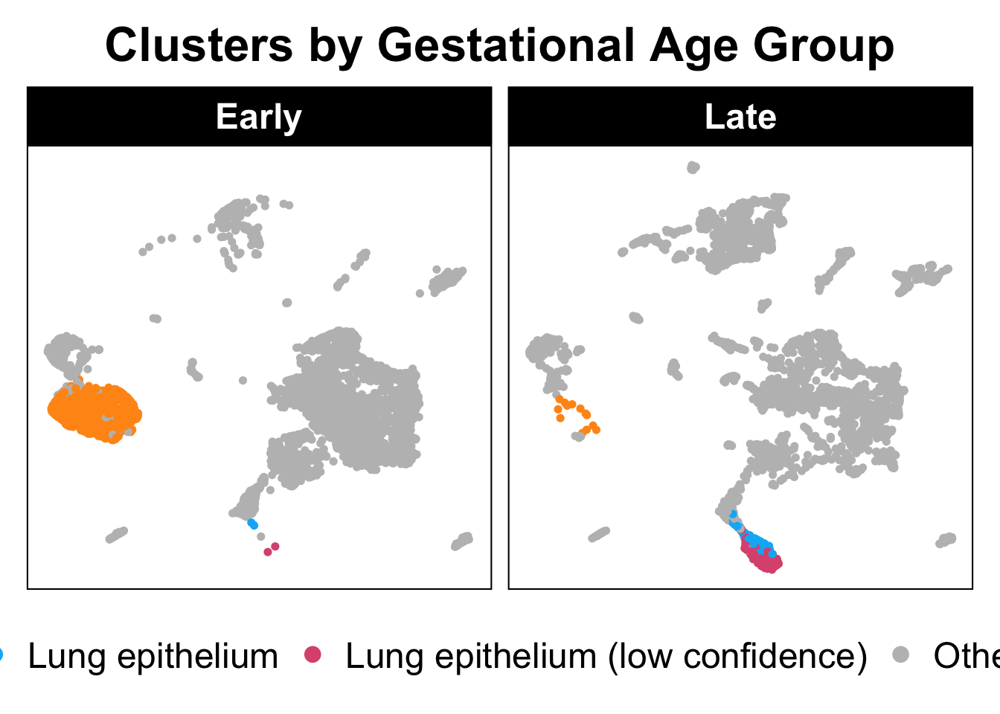
| Version | Author | Date |
|---|---|---|
| 3bc6d1a | Calandra Grima | 2026-09-28 |
saveRDS(fig2.umap_early_late, here("output", "main_figures", "fig2.umap_early_late.rds"))The sccomp_result object was generated on this
page.
sccomp_result <- readRDS(here("data", "workflow", "AmnioSC.sccomp_result.rds"))
prop_df <- generateGroupProportionsDF(seu_int.AmnioSC[,seu_int.AmnioSC$Donor != "5AF"],
group_var = "cluster_names")fig2.prop_cluster07 <- plotProportion.Paper(prop_df, curr_cluster = "ILC3",
title = "ILC3<br>",
sccomp_result, font_scaling = 4)
fig2.prop_cluster10 <- plotProportion.Paper(prop_df, curr_cluster = "Lung epithelium (low confidence)",
title = "Lung epithelium<br>(low confidence)",
sccomp_result, font_scaling = 4)
fig2.prop_cluster12 <- plotProportion.Paper(prop_df, curr_cluster = "Lung epithelium",
title = "Lung epithelium<br>",
sccomp_result, font_scaling = 4)
fig2.prop_cluster07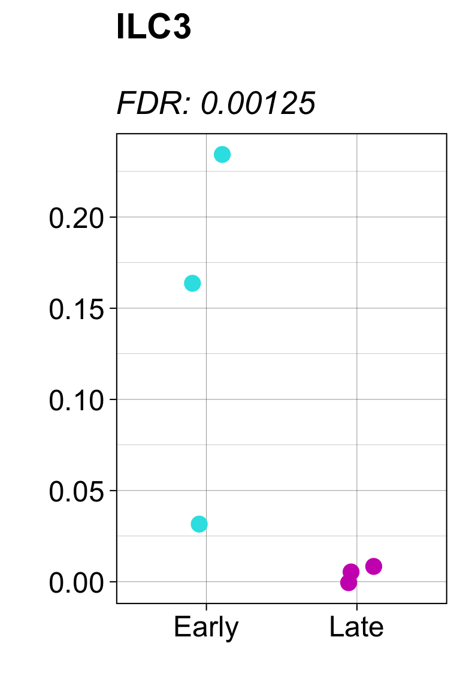
fig2.prop_cluster10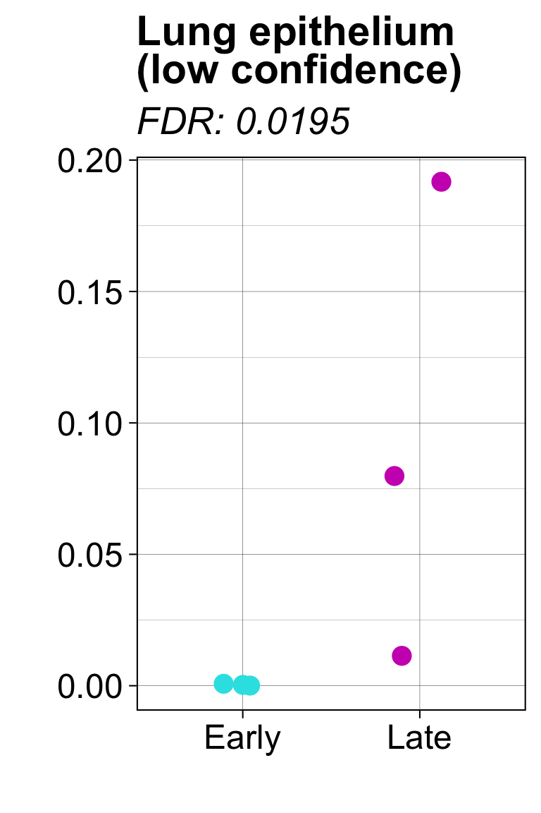
fig2.prop_cluster12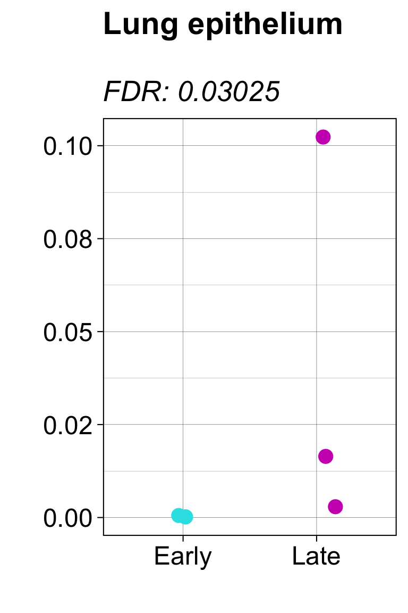
saveRDS(fig2.prop_cluster07, here("output", "main_figures", "fig2.prop_cluster07.rds"))
saveRDS(fig2.prop_cluster10, here("output", "main_figures", "fig2.prop_cluster10.rds"))
saveRDS(fig2.prop_cluster12, here("output", "main_figures", "fig2.prop_cluster12.rds"))The cds object was generated on this page.
cds <- readRDS(here("data", "workflow", "AmnioSC.lung_pseudotime.rds"))
seu_int.AmnioSC$lung_pseudotime <- NA
seu_int.AmnioSC$lung_pseudotime[names(monocle3::pseudotime(cds))] <- monocle3::pseudotime(cds)FeaturePlot(seu_int.AmnioSC, reduction = "umap", features = "lung_pseudotime", pt.size = 4) +
scale_color_viridis(option = "viridis", direction = 1, na.value = "grey") +
theme_void() + blank_axes +
ggtitle("Pseudotime for Lung Epithelium Clusters<br>") +
bottom_legend +
labs(color = "Pseudotime\n") +
theme(plot.title = element_markdown(face = "bold", size = 24, hjust = 0.5, family = "arial"),
legend.key.width=unit(0.05,"npc"),
legend.title = element_text(face = "bold.italic", size = 16),
legend.text = element_text(size = 14)) +
coord_cartesian(xlim = c(-4, 2), ylim = c(-15, -9)) -> fig2.lung_pseudotimeScale for colour is already present.
Adding another scale for colour, which will replace the existing scale.fig2.lung_pseudotime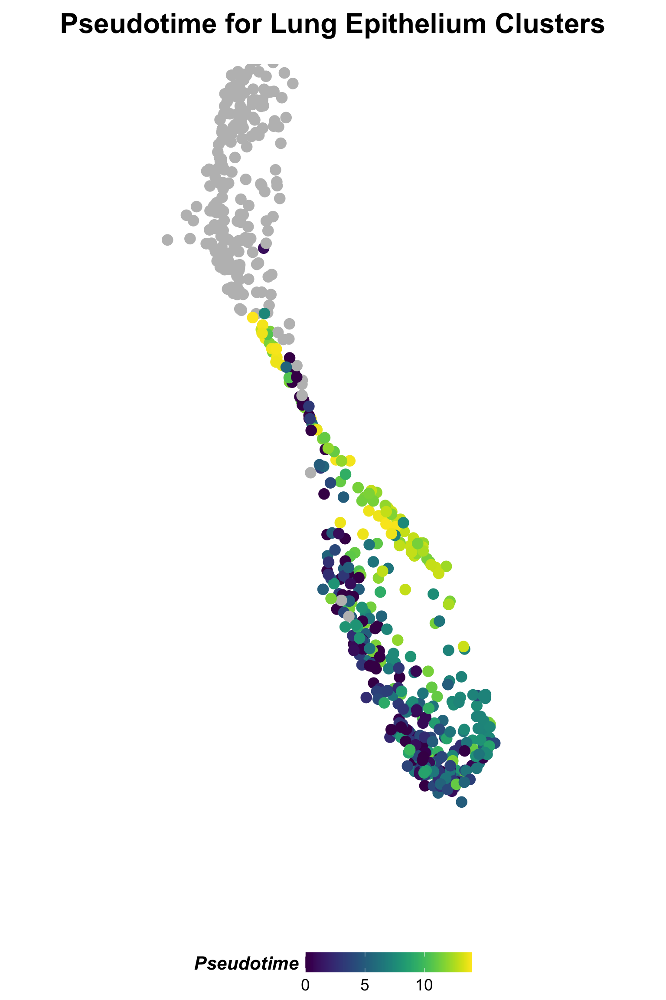
| Version | Author | Date |
|---|---|---|
| 3bc6d1a | Calandra Grima | 2026-09-28 |
saveRDS(fig2.lung_pseudotime, here("output", "main_figures", "fig2.lung_pseudotime"))lung_genes <- c("SFTPB", "SFTPC", "SFTPD", "ABCA3", "NKX2-1", "SCGB3A2", "VEGFA")
seu_int.AmnioSC.early_late <- seu_int.AmnioSC[, seu_int.AmnioSC$Donor.Paper != "AF_4"]
# following this tutorial: https://github.com/dpcook/code_snippets/blob/main/20210510_recreate_seurat_dotplot/recreate_seurat_dotplot.md
exp_mat <- as.matrix(seu_int.AmnioSC.early_late[["SCT"]]@data[lung_genes,])
meta <- seu_int.AmnioSC.early_late@meta.data %>% dplyr::select(refined_clusters, early_late_gestation, cluster_names)
meta <- bind_cols(meta, as.data.frame(t(exp_mat)))
head(meta) refined_clusters early_late_gestation cluster_names
01_1_AAACCCAAGAGCACTG-1 Cluster_06 Late Macrophages
01_1_AAACGCTTCACACCGG-1 Cluster_01 Late Keratinocytes
01_1_AAAGAACTCATCACCC-1 Cluster_06 Late Macrophages
01_1_AAAGGATTCGTAACTG-1 Cluster_01 Late Keratinocytes
01_1_AAAGGGCGTGTGGACA-1 Cluster_09 Late Unknown
01_1_AAAGGTATCGAGTGAG-1 Cluster_11 Late Neural crest-like
SFTPB SFTPC SFTPD ABCA3 NKX2-1 SCGB3A2 VEGFA
01_1_AAACCCAAGAGCACTG-1 0 0 0 0 0 0 0
01_1_AAACGCTTCACACCGG-1 0 0 0 0 0 0 0
01_1_AAAGAACTCATCACCC-1 0 0 0 0 0 0 0
01_1_AAAGGATTCGTAACTG-1 0 0 0 0 0 0 0
01_1_AAAGGGCGTGTGGACA-1 0 0 0 0 0 0 0
01_1_AAAGGTATCGAGTGAG-1 0 0 0 0 0 0 0meta <- pivot_longer(meta, -c(refined_clusters, early_late_gestation, cluster_names), names_to="Gene", values_to="Expression")
head(meta)# A tibble: 6 × 5
refined_clusters early_late_gestation cluster_names Gene Expression
<fct> <chr> <fct> <chr> <dbl>
1 Cluster_06 Late Macrophages SFTPB 0
2 Cluster_06 Late Macrophages SFTPC 0
3 Cluster_06 Late Macrophages SFTPD 0
4 Cluster_06 Late Macrophages ABCA3 0
5 Cluster_06 Late Macrophages NKX2-1 0
6 Cluster_06 Late Macrophages SCGB3A2 0meta_summary <- meta %>%
group_by(refined_clusters, early_late_gestation, cluster_names, Gene) %>%
summarise(Avg = mean(Expression),
Pct = sum(Expression > 0) / length(Expression) * 100)`summarise()` has regrouped the output.
ℹ Summaries were computed grouped by refined_clusters, early_late_gestation,
cluster_names, and Gene.
ℹ Output is grouped by refined_clusters, early_late_gestation, and
cluster_names.
ℹ Use `summarise(.groups = "drop_last")` to silence this message.
ℹ Use `summarise(.by = c(refined_clusters, early_late_gestation, cluster_names,
Gene))` for per-operation grouping (`?dplyr::dplyr_by`) instead.meta_summary$Gene <- factor(meta_summary$Gene, levels=lung_genes)
meta_summary$cluster_names <- as.character(meta_summary$cluster_names)
meta_summary$cluster_names <- gsub("Lung epithelium (low confidence)",
"Lung epithelium\n(low confidence)",
meta_summary$cluster_names, fixed = TRUE)
fig2.AmnioSC.surfactant_expr <- ggplot(meta_summary %>%
filter(refined_clusters %in% c("Cluster_10", "Cluster_12")),
aes(x=Gene, y=cluster_names)) +
geom_point(aes(size = Pct, fill = Avg), color="black", shape=21) +
scale_size("% detected", range = c(0,6)) +
scale_fill_gradient(low = "gray95", high = "#39157B",
guide = guide_colorbar(ticks.colour = "black",
frame.colour = "black"),
name = "Average\nexpression") +
ylab("Cluster") + xlab("") +
theme_linedraw() + facet_grid(. ~ early_late_gestation) +
rotate_x_labels +
labs(title = "Expression of surfactant and lung development<br>genes per cluster by gestational age group",
subtitle = "Our Dataset") +
theme(plot.title = element_markdown(size = 24, face = "bold", family = "arial"),
plot.subtitle = element_markdown(size = 22, face = "italic", family = "arial"),
legend.title = element_text(size = 20, face = "bold.italic", family = "arial"),
legend.text = element_text(size = 18, family = "arial"),
axis.title.y = element_text(size = 22, family = "arial", face = "bold"),
axis.text = element_text(size = 18, family = "arial"),
axis.title.x = element_markdown(family = "arial", size = 22, face = "bold"),
strip.text = element_text(face = "bold", size = 22))
fig2.AmnioSC.surfactant_expr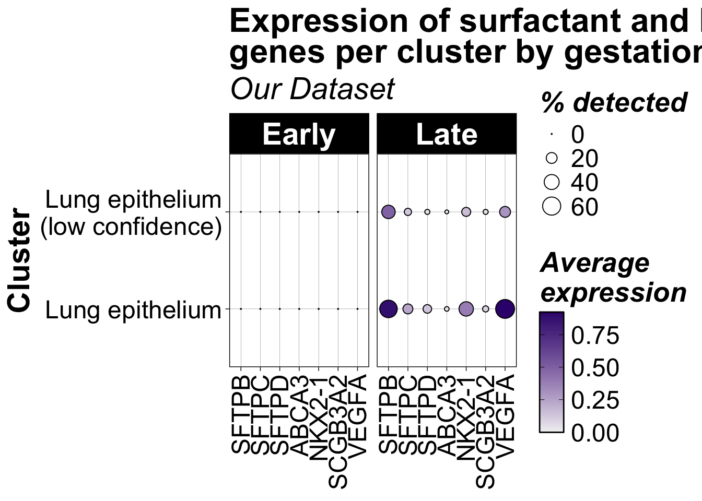
| Version | Author | Date |
|---|---|---|
| 3bc6d1a | Calandra Grima | 2026-09-28 |
saveRDS(fig2.AmnioSC.surfactant_expr,
here("output", "main_figures", "fig2.AmnioSC.surfactant_expr.rds"))ILC3_genes <- c("IL23R", "KLRB1", "KIT", "IL7R", "ZBTB16", "CD96", "CD69", "RORC", "IL17A", "NCR2", "LTB", "CD52")
seu_int.AmnioSC.early_late <- seu_int.AmnioSC[, seu_int.AmnioSC$Donor.Paper != "AF_4"]
# following this tutorial: https://github.com/dpcook/code_snippets/blob/main/20210510_recreate_seurat_dotplot/recreate_seurat_dotplot.md
exp_mat <- as.matrix(seu_int.AmnioSC.early_late[["SCT"]]@data[ILC3_genes,])
meta <- seu_int.AmnioSC.early_late@meta.data %>% dplyr::select(refined_clusters, early_late_gestation, cluster_names)
meta <- bind_cols(meta, as.data.frame(t(exp_mat)))
head(meta) refined_clusters early_late_gestation cluster_names
01_1_AAACCCAAGAGCACTG-1 Cluster_06 Late Macrophages
01_1_AAACGCTTCACACCGG-1 Cluster_01 Late Keratinocytes
01_1_AAAGAACTCATCACCC-1 Cluster_06 Late Macrophages
01_1_AAAGGATTCGTAACTG-1 Cluster_01 Late Keratinocytes
01_1_AAAGGGCGTGTGGACA-1 Cluster_09 Late Unknown
01_1_AAAGGTATCGAGTGAG-1 Cluster_11 Late Neural crest-like
IL23R KLRB1 KIT IL7R ZBTB16 CD96 CD69 RORC IL17A NCR2
01_1_AAACCCAAGAGCACTG-1 0 0 0 0 0 0 0 0 0 0
01_1_AAACGCTTCACACCGG-1 0 0 0 0 0 0 0 0 0 0
01_1_AAAGAACTCATCACCC-1 0 0 0 0 0 0 0 0 0 0
01_1_AAAGGATTCGTAACTG-1 0 0 0 0 0 0 0 0 0 0
01_1_AAAGGGCGTGTGGACA-1 0 0 0 0 0 0 0 0 0 0
01_1_AAAGGTATCGAGTGAG-1 0 0 0 0 0 0 0 0 0 0
LTB CD52
01_1_AAACCCAAGAGCACTG-1 0 0
01_1_AAACGCTTCACACCGG-1 0 0
01_1_AAAGAACTCATCACCC-1 0 0
01_1_AAAGGATTCGTAACTG-1 0 0
01_1_AAAGGGCGTGTGGACA-1 0 0
01_1_AAAGGTATCGAGTGAG-1 0 0meta <- pivot_longer(meta, -c(refined_clusters, early_late_gestation, cluster_names), names_to="Gene", values_to="Expression")
head(meta)# A tibble: 6 × 5
refined_clusters early_late_gestation cluster_names Gene Expression
<fct> <chr> <fct> <chr> <dbl>
1 Cluster_06 Late Macrophages IL23R 0
2 Cluster_06 Late Macrophages KLRB1 0
3 Cluster_06 Late Macrophages KIT 0
4 Cluster_06 Late Macrophages IL7R 0
5 Cluster_06 Late Macrophages ZBTB16 0
6 Cluster_06 Late Macrophages CD96 0meta_summary <- meta %>%
group_by(refined_clusters, early_late_gestation, cluster_names, Gene) %>%
summarise(Avg = mean(Expression),
Pct = sum(Expression > 0) / length(Expression) * 100)`summarise()` has regrouped the output.
ℹ Summaries were computed grouped by refined_clusters, early_late_gestation,
cluster_names, and Gene.
ℹ Output is grouped by refined_clusters, early_late_gestation, and
cluster_names.
ℹ Use `summarise(.groups = "drop_last")` to silence this message.
ℹ Use `summarise(.by = c(refined_clusters, early_late_gestation, cluster_names,
Gene))` for per-operation grouping (`?dplyr::dplyr_by`) instead.meta_summary$Gene <- factor(meta_summary$Gene, levels=ILC3_genes)
meta_summary$cluster_names <- as.character(meta_summary$cluster_names)
fig2.AmnioSC.ILC3_expr <- ggplot(meta_summary %>%
filter(refined_clusters %in% c("Cluster_07")),
aes(x=Gene, y=cluster_names)) +
geom_point(aes(size = Pct, fill = Avg), color="black", shape=21) +
scale_size("% detected", range = c(0,6)) +
scale_fill_gradient(low = "gray95", high = "#39157B",
guide = guide_colorbar(ticks.colour = "black",
frame.colour = "black"),
name = "Average\nexpression") +
ylab("Cluster") + xlab("") +
theme_linedraw() + facet_grid(. ~ early_late_gestation) +
rotate_x_labels +
labs(title = "Expression of ILC3 genes by gestational age group",
subtitle = "Our Dataset") +
theme(plot.title = element_markdown(size = 24, face = "bold", family = "arial"),
plot.subtitle = element_markdown(size = 22, face = "italic", family = "arial"),
legend.title = element_text(size = 20, face = "bold.italic", family = "arial"),
legend.text = element_text(size = 18, family = "arial"),
axis.title.y = element_text(size = 22, family = "arial", face = "bold"),
axis.text = element_text(size = 18, family = "arial"),
axis.title.x = element_markdown(family = "arial", size = 22, face = "bold"),
strip.text = element_text(face = "bold", size = 22))
fig2.AmnioSC.ILC3_expr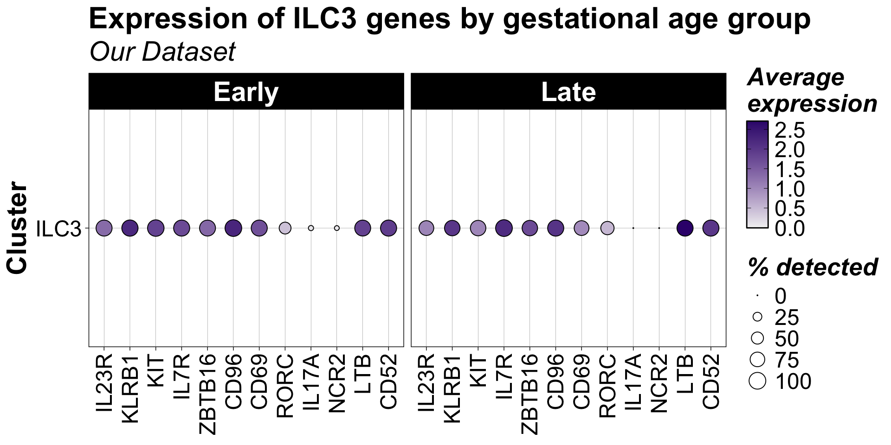
| Version | Author | Date |
|---|---|---|
| 3bc6d1a | Calandra Grima | 2026-09-28 |
saveRDS(fig2.AmnioSC.ILC3_expr,
here("output", "main_figures", "fig2.AmnioSC.ILC3_expr.rds"))# fig2.umap_early_late <- readRDS(here("output", "main_figures", "fig2.umap_early_late.rds"))
# fig2.prop_cluster07 <- readRDS(here("output", "main_figures", "fig2.prop_cluster07.rds"))
# fig2.prop_cluster10 <- readRDS(here("output", "main_figures", "fig2.prop_cluster10.rds"))
# fig2.prop_cluster12 <- readRDS(here("output", "main_figures", "fig2.prop_cluster12.rds"))
# fig2.lung_pseudotime <- readRDS(here("output", "main_figures", "fig2.lung_pseudotime"))
# fig2.AmnioSC.surfactant_expr <- readRDS(here("output", "main_figures", "fig2.AmnioSC.surfactant_expr.rds"))layout = "
AAAAAAAAABBBBBBBBBB
AAAAAAAAABBBBBBBBBB
AAAAAAAAABBBBBBBBBB
AAAAAAAAABBBBBBBBBB
AAAAAAAAABBBBBBBBBB
CCCCCCCCCCCDDDDDDDD
CCCCCCCCCCCDDDDDDDD
CCCCCCCCCCCDDDDDDDD
CCCCCCCCCCCDDDDDDDD
CCCCCCCCCCCDDDDDDDD
"
wrap_elements(fig2.prop_cluster07 + fig2.prop_cluster10 +
fig2.prop_cluster12 + theme(plot.margin = unit(rep(0,4), "cm"))) +
wrap_elements(fig2.umap_early_late + theme(plot.margin = unit(rep(0,4), "cm"))) +
wrap_elements(fig2.AmnioSC.surfactant_expr + theme(plot.margin = unit(rep(0,4), "cm"))) +
wrap_elements(fig2.lung_pseudotime + theme(plot.margin = unit(rep(0,4), "cm"))) +
plot_layout(design = layout) +
plot_annotation(tag_levels = list(c("A","B", "C", "D"))) &
theme(
plot.tag = element_text(size = 24, face = "bold", family = "arial"),
plot.title = element_text(size = 10, face = "bold", family = "arial"),
axis.title = element_text(size = 20),
axis.text = element_text(size = 14),
legend.title = element_text(size = 16),
legend.text = element_text(size = 14)) -> fig2
fig2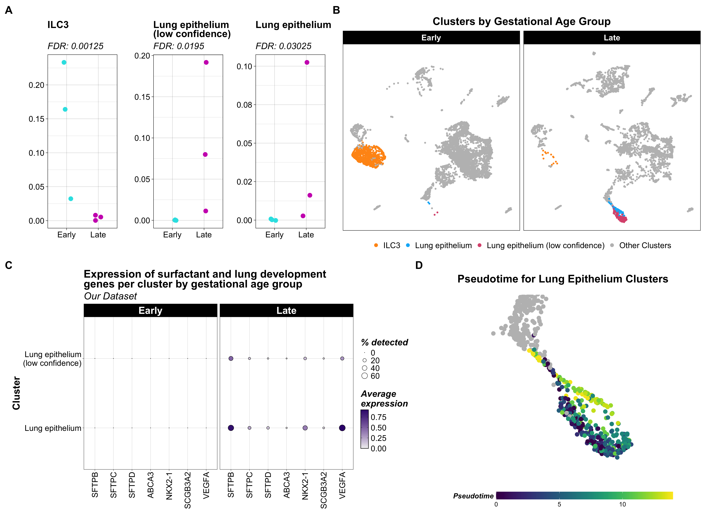
ggsave(plot = fig2, filename = here("output", "figures_png", "fig2.png"), height = 16, width = 22)The fit.AmnioSC and contr.AmnioSC objects
were generated on this
page.
fit.AmnioSC <- readRDS(here("data", "workflow", "AmnioSC.dge_early_vs_late.fit.rds"))
contr.AmnioSC <- readRDS(here("data", "workflow", "AmnioSC.dge_early_vs_late.contr.rds"))pal <- c(paletteer::paletteer_d("RColorBrewer::Set1")[2:1], "grey")
# DGE results summary
cutoff <- 0.05
# set index for current contrast
i = 1
dt.AmnioSC <- lapply(1:ncol(contr.AmnioSC), function(i){
decideTests(glmLRT(fit.AmnioSC, contrast = contr.AmnioSC[,i]),
p.value = cutoff)
})
lrt.AmnioSC <- glmLRT(fit.AmnioSC, contrast = contr.AmnioSC[,i])
topTags(lrt.AmnioSC, n = Inf) %>% data.frame -> top.AmnioSC
top_genes_to_label <- top.AmnioSC %>% filter(FDR < cutoff,
abs(logFC) > 5 | PValue < 0.000000001)
top.AmnioSC$label_this <- rownames(top.AmnioSC) %in% rownames(top_genes_to_label)
table(top.AmnioSC$label_this)
FALSE TRUE
14258 75 top.AmnioSC %>%
mutate(sig = ifelse(FDR <= cutoff, glue::glue("<= {cutoff}"),
glue::glue("> {cutoff}"))) %>%
rownames_to_column(var = "SYMBOL") %>%
left_join(dt.AmnioSC[[i]][,1] %>%
data.frame %>%
rownames_to_column(var = "SYMBOL") %>%
dplyr::rename(status = 2)) %>%
mutate(status = ifelse(status == 1, "Up",
ifelse(status == -1, "Down",
"NotSig"))) %>%
mutate(status = as.factor(status)) %>%
mutate(status = fct_relevel(status, "NotSig", after = Inf)) %>%
ggplot(aes(x = logFC, y = -log10(PValue), color = status)) +
geom_point(alpha = 0.75) +
ggrepel::geom_text_repel(data = function(x) subset(x, label_this == TRUE),
aes(x = logFC, y = -log10(PValue),
label = SYMBOL),
size = 4, colour = "black", max.overlaps = 50) +
scale_colour_manual(values = pal) +
theme_linedraw() +
labs(title = "DEGs in Keratinocytes",
subtitle = "Early vs Late Gestational Age Groups",
x = "log<sub>2</sub>(Fold Change)",
y = "-log<sub>10</sub>(P-value)",
colour = glue::glue("FDR < {cutoff}")) +
theme(legend.position = "bottom") +
theme(plot.title = element_text(face = "bold", size = 18, hjust = 0.5, family = "arial"),
plot.subtitle = element_text(face = "italic", size = 14, hjust = 0.5, family = "arial"),
axis.title.x = element_markdown(size = 16, face = "bold", family = "arial"),
axis.title.y = element_markdown(size = 16, face = "bold", family = "arial"),
axis.text = element_text(size = 14, family = "arial"),
legend.title = element_text(size = 14, family = "arial", face = "bold.italic"),
legend.text = element_text(size = 14, family = "arial")) -> fig3.volcano_plotJoining with `by = join_by(SYMBOL)`fig3.volcano_plot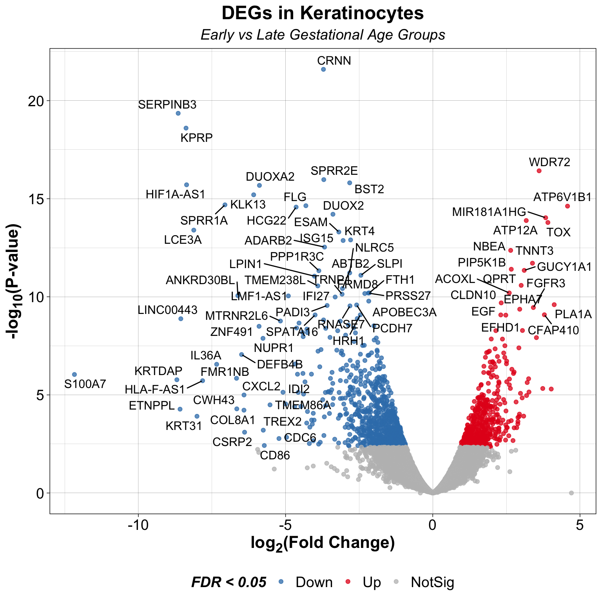
| Version | Author | Date |
|---|---|---|
| 3bc6d1a | Calandra Grima | 2026-09-28 |
saveRDS(fig3.volcano_plot, here("output", "main_figures", "fig3.volcano_plot.rds"))The c5.cam.AmnioSC and c2.cam.AmnioSC
objects were generates on this
page.
c5.cam.AmnioSC <- readRDS(here("data", "workflow", "AmnioSC.dge_early_vs_late.c5.cam.RDS"))
c2.cam.AmnioSC <- readRDS(here("data", "workflow", "AmnioSC.dge_early_vs_late.c2.cam.RDS"))pal <- c(paletteer::paletteer_d("RColorBrewer::Set1")[2:1], "grey")
c5.cam.AmnioSC %>%
dplyr::slice(1:10) %>%
rownames_to_column(var = "Set") %>%
mutate(Type = "GO",
Rank = 1:10) %>%
bind_rows(c2.cam.AmnioSC %>%
dplyr::slice(1:8) %>%
rownames_to_column(var = "Set") %>%
mutate(Type = "REACTOME",
Rank = 1:8)) %>%
mutate(Set = str_wrap(str_replace_all(Set, "_", " "), width = 32),# was 75
Set = str_remove_all(Set, "GO |REACTOME |HALLMARK ")) %>%
ggplot(aes(x = -log10(FDR), y = fct_reorder(Set, -Rank),
colour = Direction)) +
geom_point(aes(size = NGenes)) +
facet_wrap(~Type, ncol = 1, scales = "free_y") +
geom_vline(xintercept = -log10(0.05),
linetype = "dashed") +
scale_colour_manual(values = pal) +
labs(y = "Gene Set", x = "-log<sub>10</sub>(FDR)") +
theme_linedraw(12) +
theme(legend.title = element_text(size = 14, face = "bold.italic", family = "arial"),
legend.text = element_text(size = 14, family = "arial"),
axis.title.y = element_text(size = 16, family = "arial", face = "bold"),
axis.text = element_text(size = 14, family = "arial"),
axis.title.x = element_markdown(family = "arial", size = 16, face = "bold"),
strip.text = element_text(face = "bold", size = 14),
legend.box = "vertical") +
bottom_legend -> fig3.gsea
fig3.gsea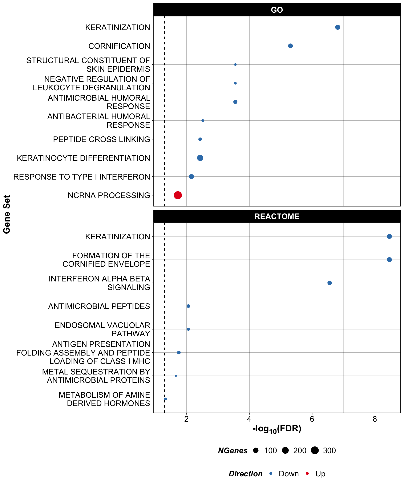
| Version | Author | Date |
|---|---|---|
| 3bc6d1a | Calandra Grima | 2026-09-28 |
saveRDS(fig3.gsea, here("output", "main_figures", "fig3.gsea.rds"))The lrt.Gerli and fit.Gerli objects were
generated on this
page.
lrt.Gerli <- readRDS(here("data", "Gerli_et_al_2024", "Gerli_et_al_2024.dge_early_vs_late.lrt.rds"))
fit.Gerli <- readRDS(here("data", "Gerli_et_al_2024", "Gerli_et_al_2024.dge_early_vs_late.fit.rds"))dge_early_vs_late.up <- top.AmnioSC %>% filter(FDR < 0.05, logFC > 0)
dim(dge_early_vs_late.up)[1] 469 6dge_early_vs_late.down <- top.AmnioSC %>% filter(FDR < 0.05, logFC < 0)
dim(dge_early_vs_late.down)[1] 835 6# translate gene SYMBOLS to entrez gene IDs
dge_early_vs_late.up.gns <- AnnotationDbi::mapIds(org.Hs.eg.db::org.Hs.eg.db,
keys = rownames(dge_early_vs_late.up),
column = c("ENTREZID"),
keytype = "SYMBOL",
multiVals = "first")'select()' returned 1:1 mapping between keys and columnsdge_early_vs_late.down.gns <- AnnotationDbi::mapIds(org.Hs.eg.db::org.Hs.eg.db,
keys = rownames(dge_early_vs_late.down),
column = c("ENTREZID"),
keytype = "SYMBOL",
multiVals = "first")'select()' returned 1:many mapping between keys and columnsfit.gns <- AnnotationDbi::mapIds(org.Hs.eg.db::org.Hs.eg.db,
keys = rownames(fit.Gerli),
column = c("ENTREZID"),
keytype = "SYMBOL",
multiVals = "first")'select()' returned 1:many mapping between keys and columns# run camera competitive gene set test
# use signed likelihood ratio test statistic as recommended by GS here: https://support.bioconductor.org/p/112937/
# fix floating point representation issue
lrt.Gerli$table$LR <- pmax(lrt.Gerli$table$LR, 0) # Converts all negative values to 0
statistic.Gerli <- sign(lrt.Gerli$table$logFC) * sqrt(lrt.Gerli$table$LR)
# get gene indices for all gene set genes
dge_early_vs_late.up.id <- ids2indices(dge_early_vs_late.up.gns,
unname(fit.gns[rownames(lrt.Gerli)]))
dge_early_vs_late.up.cam <- cameraPR(statistic.Gerli, dge_early_vs_late.up.id)
dge_early_vs_late.up.cam NGenes Direction PValue
Set1 355 Up 2.198066e-10dge_early_vs_late.down.id <- ids2indices(dge_early_vs_late.down.gns,
unname(fit.gns[rownames(lrt.Gerli)]))
dge_early_vs_late.down.cam <- cameraPR(statistic.Gerli, dge_early_vs_late.down.id)
dge_early_vs_late.down.cam NGenes Direction PValue
Set1 567 Down 1.385663e-17fig3.barcode_plot <- as.ggplot(~barcodeplot.custom(statistic.Gerli,
index = dge_early_vs_late.up.id$Set1,
index2 = dge_early_vs_late.down.id$Set1,
main = "Ranking of significant DEGs from our dataset\nin Gerli et al. (2024) dataset",
cex.main = 1.6))
fig3.barcode_plot <- fig3.barcode_plot + geom_richtext(
data = data.frame(x = 0.53, y = 0.85,
label = "***Up:** P-value = 2.1981 x 10<sup>-10</sup><br>**Down:** P-value = 1.3857 × 10<sup>−17</sup>*"),
aes(x, y, label = label), hjust = 0.5, fill = NA, label.color = NA, size = 5, family = "arial")
# fig3.barcode_plot <- fig3.barcode_plot + labs(subtitle = paste0("Up: P-value = ",
# format(dge_early_vs_late.up.cam$PValue,
# scientific = FALSE),
# "\nDown: P-value = ",
# format(dge_early_vs_late.down.cam$PValue,
# scientific = FALSE))) +
# theme(plot.subtitle = element_text(face = "italic",hjust = 0.5, vjust = -30, size = 14, family = "arial",
# margin = margin(t = 0, b = 10)))
fig3.barcode_plot # Statistic label needs to look off center here to look ok in the main figure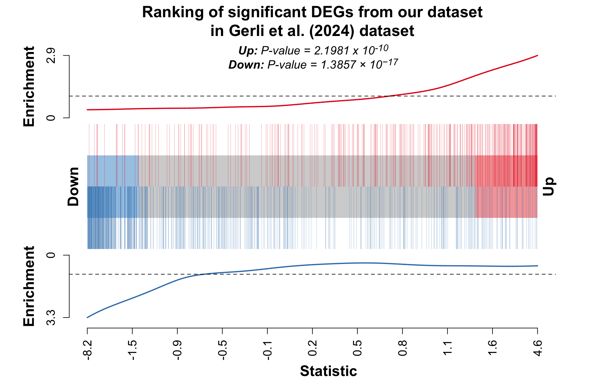
saveRDS(fig3.barcode_plot, here("output", "main_figures", "fig3.barcode_plot.rds"))# fig3.volcano_plot <- readRDS(here("output", "main_figures", "fig3.volcano_plot.rds"))
# fig3.gsea <- readRDS(here("output", "main_figures", "fig3.gsea.rds"))
# fig3.barcode_plot <- readRDS(here("output", "main_figures", "fig3.barcode_plot.rds"))layout = "
AAAAAAAAAA#BBBBBBBB
AAAAAAAAAA#BBBBBBBB
AAAAAAAAAA#BBBBBBBB
AAAAAAAAAA#BBBBBBBB
AAAAAAAAAA#BBBBBBBB
AAAAAAAAAA#BBBBBBBB
CCCCCCCCCCCBBBBBBBB
CCCCCCCCCCCBBBBBBBB
CCCCCCCCCCCBBBBBBBB
CCCCCCCCCCCBBBBBBBB
CCCCCCCCCCCBBBBBBBB
"
wrap_elements(fig3.volcano_plot + theme(plot.margin = unit(rep(0,4), "cm"))) +
wrap_elements(fig3.gsea + theme(plot.margin = unit(rep(0,4), "cm"))) +
wrap_elements(fig3.barcode_plot + theme(plot.margin = unit(rep(0,4), "cm"))) +
plot_layout(design = layout) +
plot_annotation(tag_levels = list(c("A", "B", "C"))) &
theme(
plot.tag = element_text(size = 24, face = "bold", family = "arial"),
plot.title = element_text(size = 10, face = "bold", family = "arial"),
axis.title = element_text(size = 20),
axis.text = element_text(size = 14),
legend.title = element_text(size = 16),
legend.text = element_text(size = 14)) -> fig3
fig3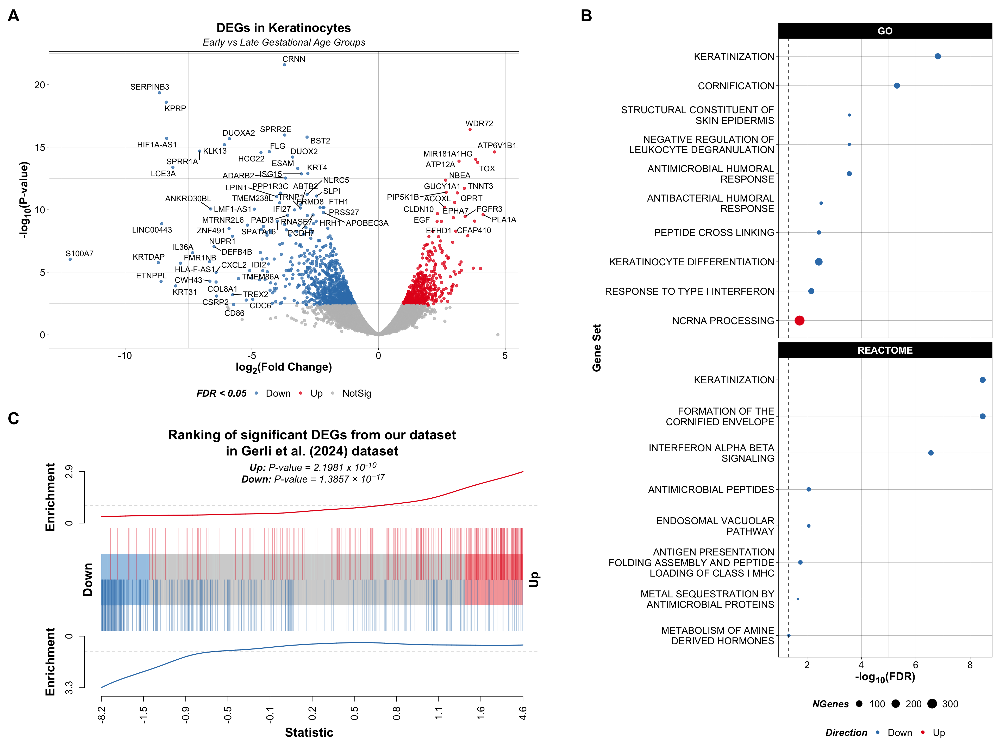
ggsave(plot = fig3, filename = here("output", "figures_png", "fig3.png"), height = 15, width = 20)sessioninfo::session_info()─ Session info ───────────────────────────────────────────────────────────────
setting value
version R version 4.5.0 (2025-04-11)
os macOS 26.7.1
system aarch64, darwin20
ui X11
language (EN)
collate en_US.UTF-8
ctype en_US.UTF-8
tz Australia/Melbourne
date 2026-10-21
pandoc 3.10 @ /Applications/RStudio.app/Contents/Resources/app/quarto/bin/tools/aarch64/ (via rmarkdown)
quarto 1.10.18 @ /Applications/RStudio.app/Contents/Resources/app/quarto/bin/quarto
─ Packages ───────────────────────────────────────────────────────────────────
! package * version date (UTC) lib source
P abind 1.4-8 2024-09-12 [?] RSPM
P AnnotationDbi 1.72.0 2025-10-29 [?] Bioconduc~
backports 1.5.0 2024-05-23 [1] RSPM (R 4.5.0)
P beachmat 2.26.0 2025-10-29 [?] Bioconduc~
P beeswarm 0.4.0 2021-06-01 [?] RSPM
P Biobase * 2.70.0 2025-10-29 [?] Bioconduc~
P BiocGenerics * 0.56.0 2025-10-29 [?] Bioconduc~
P BiocManager 1.30.27 2025-11-14 [?] RSPM
P BiocNeighbors 2.4.0 2025-10-29 [?] Bioconduc~
P BiocParallel 1.44.0 2025-10-29 [?] Bioconduc~
P BiocSingular 1.26.1 2025-11-17 [?] Bioconduc~
P Biostrings 2.78.0 2025-10-29 [?] Bioconduc~
P bit 4.6.0 2025-03-06 [?] RSPM
P bit64 4.6.0-1 2025-01-16 [?] RSPM
P blob 1.3.0 2026-01-14 [?] RSPM
P bluster 1.20.0 2025-10-29 [?] Bioconduc~
P boot 1.3-31 2024-08-28 [?] CRAN (R 4.5.0)
P bslib 0.10.0 2026-01-26 [?] RSPM
P cachem 1.1.0 2024-05-16 [?] RSPM
P callr 3.7.6 2024-03-25 [?] CRAN (R 4.5.0)
P checkmate 2.3.3 2025-08-18 [?] RSPM
P cli 3.6.6 2026-04-09 [?] RSPM
P cluster 2.1.8.1 2025-03-12 [?] CRAN (R 4.5.0)
P clustree * 0.5.1 2023-11-05 [?] RSPM
P cmdstanr 0.9.0 2025-03-30 [?] https://stan-dev.r-universe.dev (R 4.5.3)
P codetools 0.2-20 2024-03-31 [?] CRAN (R 4.5.0)
colorspace 2.1-2 2025-09-22 [1] RSPM (R 4.5.0)
P commonmark 2.0.0 2025-07-07 [?] RSPM
P cowplot * 1.2.0 2025-07-07 [?] RSPM
P crayon 1.5.3 2024-06-20 [?] RSPM
P data.table 1.18.2.1 2026-01-27 [?] RSPM
P DBI 1.2.3 2024-06-02 [?] RSPM
DelayedArray 0.36.1 2026-03-31 [1] https://bioc-release.r-universe.dev (R 4.5.3)
P deldir 2.0-4 2024-02-28 [?] RSPM
P digest 0.6.39 2025-11-19 [?] RSPM
P distributional 0.6.0 2026-01-14 [?] RSPM
dplyr * 1.2.0 2026-02-03 [1] RSPM (R 4.5.0)
P dqrng 0.4.1 2024-05-28 [?] CRAN (R 4.5.0)
P edgeR * 4.8.2 2025-12-23 [?] https://bioc-release.r-universe.dev (R 4.5.2)
P egg * 0.4.5 2019-07-13 [?] RSPM
P evaluate 1.0.5 2025-08-27 [?] RSPM
P farver 2.1.2 2024-05-13 [?] RSPM
P fastmap 1.2.0 2024-05-15 [?] RSPM
P fitdistrplus 1.2-6 2026-01-24 [?] RSPM
P forcats * 1.0.1 2025-09-25 [?] RSPM
P fs 2.1.0 2026-04-18 [?] RSPM
P future 1.69.0 2026-01-16 [?] RSPM
P future.apply 1.20.1 2025-12-09 [?] RSPM
P generics * 0.1.4 2025-05-09 [?] CRAN (R 4.5.0)
P GenomicRanges * 1.62.1 2025-12-08 [?] Bioconduc~
P getPass 0.2-4 2023-12-10 [?] CRAN (R 4.5.0)
P ggalluvial * 0.12.5 2023-02-22 [?] RSPM
P ggbeeswarm * 0.7.3 2025-11-29 [?] RSPM
P ggforce 0.5.0 2025-06-18 [?] RSPM
P ggplot2 * 4.0.2 2026-02-03 [?] RSPM
P ggplotify * 0.1.3 2025-09-20 [?] RSPM
P ggraph * 2.2.2 2025-08-24 [?] RSPM
P ggrepel 0.9.6 2024-09-07 [?] CRAN (R 4.5.0)
P ggridges 0.5.7 2025-08-27 [?] RSPM
P ggtext * 0.1.2 2022-09-16 [?] RSPM
P git2r 0.36.2 2025-03-29 [?] CRAN (R 4.5.0)
P globals 0.19.0 2026-02-02 [?] RSPM
P glue 1.8.0 2024-09-30 [?] RSPM
P goftest 1.2-3 2021-10-07 [?] CRAN (R 4.5.0)
P graphlayouts 1.2.2 2025-01-23 [?] RSPM
P gridExtra * 2.3 2017-09-09 [?] RSPM
gridGraphics 0.5-1 2020-12-13 [1] RSPM (R 4.5.0)
P gridtext 0.1.5 2022-09-16 [?] RSPM
P gtable 0.3.6 2024-10-25 [?] RSPM
P here * 1.0.2 2025-09-15 [?] RSPM
P hms 1.1.4 2025-10-17 [?] RSPM
P htmltools 0.5.9 2025-12-04 [?] RSPM
P htmlwidgets 1.6.4 2023-12-06 [?] RSPM
P httpuv 1.6.16 2025-04-16 [?] CRAN (R 4.5.0)
P httr 1.4.7 2023-08-15 [?] RSPM
P ica 1.0-3 2022-07-08 [?] CRAN (R 4.5.0)
P igraph 2.2.1 2025-10-27 [?] RSPM
instantiate 0.2.3 2024-10-02 [1] RSPM (R 4.5.0)
P IRanges * 2.44.0 2025-10-29 [?] Bioconduc~
P irlba 2.3.7 2026-01-30 [?] RSPM
P jquerylib 0.1.4 2021-04-26 [?] RSPM
P jsonlite 2.0.0 2025-03-27 [?] RSPM
P KEGGREST 1.50.0 2025-10-29 [?] Bioconduc~
P KernSmooth 2.23-26 2025-01-01 [?] CRAN (R 4.5.0)
P knitr 1.51 2025-12-20 [?] RSPM
P labeling 0.4.3 2023-08-29 [?] RSPM
P later 1.4.5 2026-01-08 [?] RSPM
P lattice 0.22-7 2025-04-02 [?] RSPM
P lazyeval 0.2.2 2019-03-15 [?] RSPM
leiden 0.4.3.1 2023-11-17 [1] RSPM (R 4.5.0)
P lifecycle 1.0.5 2026-01-08 [?] RSPM
P limma * 3.66.0 2025-10-29 [?] Bioconduc~
P listenv 0.10.0 2025-11-02 [?] RSPM
P litedown 0.9 2025-12-18 [?] RSPM
lme4 2.0-1 2026-03-05 [1] RSPM (R 4.5.0)
P lmtest 0.9-40 2022-03-21 [?] CRAN (R 4.5.0)
P locfit 1.5-9.12 2025-03-05 [?] RSPM
P lubridate * 1.9.4 2024-12-08 [?] RSPM
P magick * 2.9.0 2025-09-08 [?] RSPM
P magrittr 2.0.4 2025-09-12 [?] RSPM
P markdown 2.0 2025-03-23 [?] RSPM
P MASS 7.3-65 2025-02-28 [?] CRAN (R 4.5.0)
P Matrix 1.7-4 2025-08-28 [?] RSPM
P MatrixGenerics * 1.22.0 2025-10-29 [?] Bioconduc~
P matrixStats * 1.5.0 2025-01-07 [?] RSPM
P memoise 2.0.1 2021-11-26 [?] RSPM
P metapod 1.18.0 2025-10-29 [?] Bioconduc~
P mime 0.13 2025-03-17 [?] RSPM
P miniUI 0.1.2 2025-04-17 [?] CRAN (R 4.5.0)
minqa 1.2.8 2024-08-17 [1] RSPM (R 4.5.0)
monocle3 1.4.27 2026-06-26 [1] Github (cole-trapnell-lab/monocle3@536f103)
P nlme 3.1-168 2025-03-31 [?] CRAN (R 4.5.0)
nloptr 2.2.1 2025-03-17 [1] RSPM (R 4.5.0)
P org.Hs.eg.db 3.22.0 2026-02-03 [?] Bioconductor
P otel 0.2.0 2025-08-29 [?] RSPM
P paletteer 1.7.0 2026-01-08 [?] RSPM
P parallelly 1.46.1 2026-01-08 [?] RSPM
P patchwork * 1.3.2 2025-08-25 [?] RSPM
P pbapply 1.7-4 2025-07-20 [?] RSPM
P pillar 1.11.1 2025-09-17 [?] RSPM
P pkgconfig 2.0.3 2019-09-22 [?] RSPM
P plotly 4.12.0 2026-01-24 [?] RSPM
P plyr 1.8.9 2023-10-02 [?] RSPM
P png * 0.1-8 2022-11-29 [?] RSPM
P Polychrome * 1.5.4 2025-04-06 [?] RSPM
P polyclip 1.10-7 2024-07-23 [?] CRAN (R 4.5.0)
P posterior 1.6.1 2025-02-27 [?] RSPM
P prismatic 1.1.2 2024-04-10 [?] RSPM
P processx 3.8.6 2025-02-21 [?] CRAN (R 4.5.0)
P progressr 0.18.0 2025-11-06 [?] RSPM
P promises 1.5.0 2025-11-01 [?] RSPM
P ps 1.9.1 2025-04-12 [?] CRAN (R 4.5.0)
P purrr * 1.2.1 2026-01-09 [?] RSPM
P R6 2.6.1 2025-02-15 [?] RSPM
P ragg 1.5.0 2025-09-02 [?] RSPM
P RANN 2.6.2 2024-08-25 [?] CRAN (R 4.5.0)
P rappdirs 0.3.4 2026-01-17 [?] RSPM
rbibutils 2.4.1 2026-01-21 [1] RSPM (R 4.5.0)
P RColorBrewer 1.1-3 2022-04-03 [?] RSPM
P Rcpp 1.1.1 2026-01-10 [?] RSPM
P RcppAnnoy 0.0.23 2026-01-12 [?] RSPM
Rdpack 2.6.5 2026-01-23 [1] RSPM (R 4.5.0)
P readr * 2.1.6 2025-11-14 [?] RSPM
reformulas 0.4.4 2026-02-02 [1] RSPM (R 4.5.0)
P rematch2 2.1.2 2020-05-01 [?] RSPM
P renv 1.1.7 2026-01-27 [?] RSPM
P reshape2 * 1.4.5 2025-11-12 [?] RSPM
P reticulate 1.44.1 2025-11-14 [?] RSPM
P rlang 1.2.0 2026-04-06 [?] RSPM
P rmarkdown 2.30 2025-09-28 [?] RSPM
P ROCR 1.0-12 2026-01-23 [?] RSPM
P rprojroot 2.1.1 2025-08-26 [?] RSPM
P RSQLite 2.4.5 2025-11-30 [?] RSPM
P rstudioapi 0.18.0 2026-01-16 [?] RSPM
P rsvd 1.0.5 2021-04-16 [?] RSPM
P Rtsne 0.17 2023-12-07 [?] CRAN (R 4.5.0)
P S4Arrays 1.10.1 2025-12-08 [?] Bioconduc~
S4Vectors * 0.48.1 2026-04-04 [1] https://bioc-release.r-universe.dev (R 4.5.3)
P S7 0.2.1 2025-11-14 [?] RSPM
P sass 0.4.10 2025-04-11 [?] RSPM
P ScaledMatrix 1.18.0 2025-10-29 [?] Bioconduc~
P scales 1.4.0 2025-04-24 [?] RSPM
P scater * 1.38.0 2025-10-29 [?] Bioconduc~
P scattermore 1.2 2023-06-12 [?] CRAN (R 4.5.0)
P scatterplot3d 0.3-44 2023-05-05 [?] RSPM
P sccomp 2.2.0 2025-10-29 [?] https://bioc-release.r-universe.dev (R 4.5.2)
P scran * 1.38.0 2025-10-29 [?] Bioconduc~
P sctransform 0.4.3 2026-01-10 [?] RSPM
P scuttle * 1.20.0 2025-10-29 [?] Bioconduc~
P Seqinfo * 1.0.0 2025-10-29 [?] Bioconduc~
P sessioninfo * 1.2.3 2025-02-05 [?] RSPM
Seurat * 4.4.0 2024-01-10 [1] https://satijalab.r-universe.dev (R 4.5.0)
SeuratObject * 4.1.4 2023-09-27 [1] https://satijalab.r-universe.dev (R 4.5.0)
P shiny 1.12.1 2025-12-09 [?] RSPM
P SingleCellExperiment * 1.32.0 2025-10-29 [?] Bioconduc~
P sp 2.2-0 2025-02-01 [?] CRAN (R 4.5.0)
P SparseArray 1.10.8 2025-12-18 [?] Bioconduc~
P spatstat.data 3.1-9 2025-10-18 [?] RSPM
P spatstat.explore 3.7-0 2026-01-22 [?] RSPM
P spatstat.geom 3.7-0 2026-01-20 [?] RSPM
P spatstat.random 3.4-4 2026-01-21 [?] RSPM
P spatstat.sparse 3.1-0 2024-06-21 [?] CRAN (R 4.5.0)
P spatstat.univar 3.1-6 2026-01-17 [?] RSPM
P spatstat.utils 3.2-1 2026-01-10 [?] RSPM
P statmod 1.5.1 2025-10-09 [?] RSPM
P stringi 1.8.7 2025-03-27 [?] RSPM
P stringr * 1.6.0 2025-11-04 [?] RSPM
P SummarizedExperiment * 1.40.0 2025-10-29 [?] Bioconduc~
P survival 3.8-6 2026-01-16 [?] RSPM
P systemfonts 1.3.1 2025-10-01 [?] RSPM
P tensor 1.5.1 2025-06-17 [?] RSPM
P tensorA 0.36.2.1 2023-12-13 [?] RSPM
P textshaping 1.0.4 2025-10-10 [?] RSPM
P tibble * 3.3.1 2026-01-11 [?] RSPM
P tidygraph 1.3.1 2024-01-30 [?] RSPM
P tidyr * 1.3.2 2025-12-19 [?] RSPM
P tidyselect 1.2.1 2024-03-11 [?] RSPM
P tidyverse * 2.0.0 2023-02-22 [?] RSPM
P timechange 0.4.0 2026-01-29 [?] RSPM
P tweenr 2.0.3 2024-02-26 [?] RSPM
P tzdb 0.5.0 2025-03-15 [?] RSPM
P utf8 1.2.6 2025-06-08 [?] RSPM
P uwot 0.2.4 2025-11-10 [?] RSPM
P vctrs 0.7.1 2026-01-23 [?] RSPM
P vipor 0.4.7 2023-12-18 [?] RSPM
P viridis * 0.6.5 2024-01-29 [?] RSPM
P viridisLite * 0.4.2 2023-05-02 [?] RSPM
P whisker 0.4.1 2022-12-05 [?] CRAN (R 4.5.0)
P withr 3.0.2 2024-10-28 [?] RSPM
P workflowr * 1.7.2 2025-08-18 [?] RSPM
P xfun 0.56 2026-01-18 [?] RSPM
P xml2 1.5.2 2026-01-17 [?] RSPM
P xtable 1.8-4 2019-04-21 [?] RSPM
P XVector 0.50.0 2025-10-29 [?] Bioconduc~
P yaml 2.3.12 2025-12-10 [?] RSPM
P yulab.utils 0.2.4 2026-02-02 [?] RSPM
P zoo 1.8-15 2025-12-15 [?] RSPM
[1] <project>/renv/library/macos/R-4.5/aarch64-apple-darwin20
[2] <renv-cache>/sandbox/macos/R-4.5/aarch64-apple-darwin20/4cd76b74
* ── Packages attached to the search path.
P ── Loaded and on-disk path mismatch.
──────────────────────────────────────────────────────────────────────────────
sessionInfo()R version 4.5.0 (2025-04-11)
Platform: aarch64-apple-darwin20
Running under: macOS 26.7.1
Matrix products: default
BLAS: /Library/Frameworks/R.framework/Versions/4.5-arm64/Resources/lib/libRblas.0.dylib
LAPACK: /Library/Frameworks/R.framework/Versions/4.5-arm64/Resources/lib/libRlapack.dylib; LAPACK version 3.12.1
locale:
[1] en_US.UTF-8/en_US.UTF-8/en_US.UTF-8/C/en_US.UTF-8/en_US.UTF-8
time zone: Australia/Melbourne
tzcode source: internal
attached base packages:
[1] grid stats4 stats graphics grDevices datasets utils
[8] methods base
other attached packages:
[1] scran_1.38.0 reshape2_1.4.5
[3] ggalluvial_0.12.5 ggplotify_0.1.3
[5] lubridate_1.9.4 forcats_1.0.1
[7] purrr_1.2.1 readr_2.1.6
[9] tidyr_1.3.2 tibble_3.3.1
[11] tidyverse_2.0.0 dplyr_1.2.0
[13] ggtext_0.1.2 edgeR_4.8.2
[15] limma_3.66.0 png_0.1-8
[17] magick_2.9.0 Polychrome_1.5.4
[19] viridis_0.6.5 viridisLite_0.4.2
[21] sessioninfo_1.2.3 here_1.0.2
[23] egg_0.4.5 gridExtra_2.3
[25] patchwork_1.3.2 cowplot_1.2.0
[27] ggbeeswarm_0.7.3 stringr_1.6.0
[29] scater_1.38.0 scuttle_1.20.0
[31] SingleCellExperiment_1.32.0 SummarizedExperiment_1.40.0
[33] Biobase_2.70.0 GenomicRanges_1.62.1
[35] Seqinfo_1.0.0 IRanges_2.44.0
[37] S4Vectors_0.48.1 BiocGenerics_0.56.0
[39] generics_0.1.4 MatrixGenerics_1.22.0
[41] matrixStats_1.5.0 clustree_0.5.1
[43] ggraph_2.2.2 ggplot2_4.0.2
[45] SeuratObject_4.1.4 Seurat_4.4.0
[47] workflowr_1.7.2
loaded via a namespace (and not attached):
[1] fs_2.1.0 spatstat.sparse_3.1-0 httr_1.4.7
[4] RColorBrewer_1.1-3 backports_1.5.0 tools_4.5.0
[7] sctransform_0.4.3 utf8_1.2.6 R6_2.6.1
[10] lazyeval_0.2.2 uwot_0.2.4 litedown_0.9
[13] withr_3.0.2 sp_2.2-0 progressr_0.18.0
[16] textshaping_1.0.4 cli_3.6.6 spatstat.explore_3.7-0
[19] prismatic_1.1.2 labeling_0.4.3 sass_0.4.10
[22] S7_0.2.1 spatstat.data_3.1-9 ggridges_0.5.7
[25] pbapply_1.7-4 systemfonts_1.3.1 commonmark_2.0.0
[28] yulab.utils_0.2.4 parallelly_1.46.1 RSQLite_2.4.5
[31] rstudioapi_0.18.0 gridGraphics_0.5-1 ica_1.0-3
[34] spatstat.random_3.4-4 distributional_0.6.0 Matrix_1.7-4
[37] abind_1.4-8 lifecycle_1.0.5 whisker_0.4.1
[40] scatterplot3d_0.3-44 yaml_2.3.12 SparseArray_1.10.8
[43] Rtsne_0.17 blob_1.3.0 paletteer_1.7.0
[46] promises_1.5.0 dqrng_0.4.1 crayon_1.5.3
[49] miniUI_0.1.2 lattice_0.22-7 beachmat_2.26.0
[52] KEGGREST_1.50.0 pillar_1.11.1 knitr_1.51
[55] metapod_1.18.0 boot_1.3-31 future.apply_1.20.1
[58] codetools_0.2-20 leiden_0.4.3.1 glue_1.8.0
[61] getPass_0.2-4 spatstat.univar_3.1-6 data.table_1.18.2.1
[64] Rdpack_2.6.5 vctrs_0.7.1 gtable_0.3.6
[67] rematch2_2.1.2 cachem_1.1.0 xfun_0.56
[70] rbibutils_2.4.1 S4Arrays_1.10.1 mime_0.13
[73] tidygraph_1.3.1 reformulas_0.4.4 sccomp_2.2.0
[76] survival_3.8-6 statmod_1.5.1 bluster_1.20.0
[79] fitdistrplus_1.2-6 ROCR_1.0-12 nlme_3.1-168
[82] bit64_4.6.0-1 RcppAnnoy_0.0.23 rprojroot_2.1.1
[85] tensorA_0.36.2.1 bslib_0.10.0 irlba_2.3.7
[88] vipor_0.4.7 KernSmooth_2.23-26 otel_0.2.0
[91] DBI_1.2.3 colorspace_2.1-2 tidyselect_1.2.1
[94] processx_3.8.6 bit_4.6.0 compiler_4.5.0
[97] git2r_0.36.2 BiocNeighbors_2.4.0 xml2_1.5.2
[100] DelayedArray_0.36.1 plotly_4.12.0 posterior_1.6.1
[103] checkmate_2.3.3 scales_1.4.0 lmtest_0.9-40
[106] callr_3.7.6 rappdirs_0.3.4 digest_0.6.39
[109] goftest_1.2-3 minqa_1.2.8 spatstat.utils_3.2-1
[112] rmarkdown_2.30 XVector_0.50.0 htmltools_0.5.9
[115] pkgconfig_2.0.3 lme4_2.0-1 fastmap_1.2.0
[118] rlang_1.2.0 htmlwidgets_1.6.4 shiny_1.12.1
[121] farver_2.1.2 jquerylib_0.1.4 zoo_1.8-15
[124] jsonlite_2.0.0 BiocParallel_1.44.0 BiocSingular_1.26.1
[127] magrittr_2.0.4 Rcpp_1.1.1 reticulate_1.44.1
[130] stringi_1.8.7 MASS_7.3-65 org.Hs.eg.db_3.22.0
[133] plyr_1.8.9 parallel_4.5.0 listenv_0.10.0
[136] ggrepel_0.9.6 deldir_2.0-4 Biostrings_2.78.0
[139] graphlayouts_1.2.2 splines_4.5.0 gridtext_0.1.5
[142] tensor_1.5.1 hms_1.1.4 locfit_1.5-9.12
[145] ps_1.9.1 igraph_2.2.1 spatstat.geom_3.7-0
[148] markdown_2.0 ScaledMatrix_1.18.0 evaluate_1.0.5
[151] renv_1.1.7 BiocManager_1.30.27 nloptr_2.2.1
[154] tzdb_0.5.0 tweenr_2.0.3 httpuv_1.6.16
[157] RANN_2.6.2 polyclip_1.10-7 future_1.69.0
[160] scattermore_1.2 ggforce_0.5.0 rsvd_1.0.5
[163] monocle3_1.4.27 xtable_1.8-4 later_1.4.5
[166] ragg_1.5.0 instantiate_0.2.3 AnnotationDbi_1.72.0
[169] memoise_2.0.1 beeswarm_0.4.0 cluster_2.1.8.1
[172] timechange_0.4.0 globals_0.19.0 cmdstanr_0.9.0